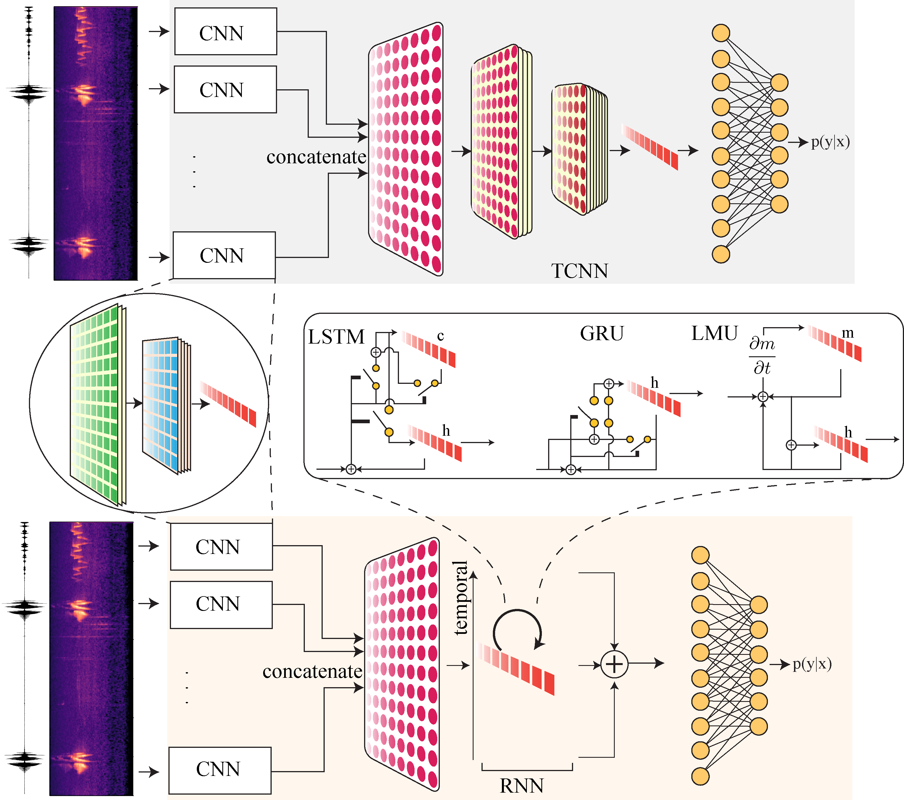

|  |
Abstract: We present a deep learning approach towards the large-scale prediction and analysis of bird acoustics from 100 different bird species. We use spectrograms constructed on bird audio recordings from the Cornell Bird Challenge (CBC)2020 dataset, which includes recordings of multiple and potentially overlapping bird vocalizations with background noise. Our experiments show that a hybrid modeling approach that involves a Convolutional Neural Network (CNN) for learning the representation for a slice of the spectrogram, and a Recurrent Neural Network (RNN) for the temporal component to combine across time-points leads to the most accurate model on this dataset. We show results on a spectrum of models ranging from stand-alone CNNs to hybrid models of various types obtained by combining CNNs with other CNNs or RNNs of the following types: Long Short-Term Memory (LSTM) networks, Gated Recurrent Units (GRU), and Legendre Memory Units (LMU). The best performing model achieves an average accuracy of 67% over the 100 different bird species, with the highest accuracy of 90% for the bird species, Red crossbill. We further analyze the learned representations visually and find them to be intuitive, where we find that related bird species are clustered close together. We present a novel way to empirically interpret the representations learned by the LMU-based hybrid model which shows how memory channel patterns change over time with the changes seen in the spectrograms.
[paper] [code]